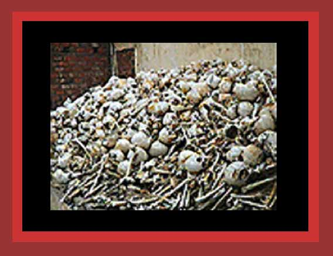

| From April 1970 to January 1979 the communist Khmer Rouge guerrillas, and then dictators of Cambodia when they won their guerrilla war, murdered about 2,000,000 Cambodians and 35,000 Vietnamese. I could find no photos on the internet of these corpses other than those of their skulls and bones. One great mound of these is shown here. For documentation, see Death By Government and Statistics of Democide. Source: "The Killing Fields". |